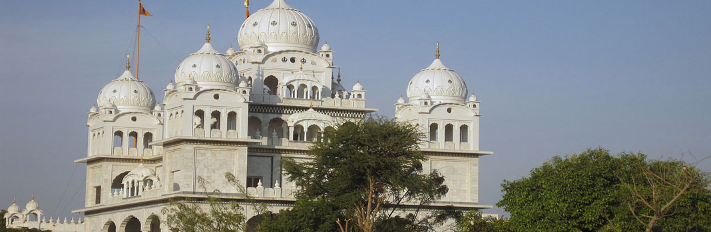

Hoshiarpur
Hoshiarpur is a city in Punjab, known for its rich cultural heritage and historical significance. It is famous for its beautiful temples, gardens, and vibrant festivals.
Fun Fact:
~Hoshiarpur is often referred to as the "City of Saints" due to the presence of numerous temples and spiritual sites!
Things to Explore in Hoshiarpur:
-
Temples:
Visit the ancient temples that showcase intricate architecture and spiritual significance.
-
Gardens:
Explore the lush green gardens that offer a peaceful retreat from the hustle and bustle of city life.
-
Festivals:
Experience the vibrant festivals celebrated with great enthusiasm, showcasing the rich cultural heritage of Punjab.
-
Local Cuisine:
Savor the delicious Punjabi cuisine, known for its rich flavors and variety.
Why Visit Hoshiarpur?
!Because it’s not just a city; it’s a blend of spirituality, culture, and natural beauty that offers a unique experience for every visitor!
Gurudwara Talhan
Gurudwara Talhan is a significant Sikh shrine located in Hoshiarpur. It is known for its serene ambiance and spiritual significance, attracting devotees from all over.
Fun Fact:
~The Gurudwara is built on the site where Guru Nanak Dev Ji is believed to have visited during his travels!
Things to Explore at Gurudwara Talhan:
-
Spiritual Atmosphere:
Experience the peaceful and spiritual environment that encourages meditation and reflection.
-
Langar:
Enjoy the community meal served to all visitors, embodying the spirit of equality and service.
-
Historical Significance:
Learn about the history and significance of the Gurudwara through various exhibits and artifacts.
-
Festivals:
Participate in the celebrations during important Sikh festivals, which are marked by devotion and joy.
Why Visit Gurudwara Talhan?
!Because it’s not just a place of worship; it’s a spiritual haven that offers a glimpse into the rich cultural heritage of Sikhism, making it a must-visit for devotees and tourists alike.
Gurudwara Sach Khand Barakhamba
Gurudwara Sach Khand Barakhamba is a significant Sikh shrine in Hoshiarpur, known for its spiritual ambiance and historical importance. It serves as a center for community gatherings and religious activities.
Fun Fact:
~The Gurudwara is famous for its grand celebrations during Guru Gobind Singh Jayanti, attracting thousands of devotees!
Things to Explore at Gurudwara Sach Khand Barakhamba:
-
Spiritual Environment:
Experience the serene atmosphere that encourages prayer and meditation.
-
Community Service:
Participate in various community service activities organized by the Gurudwara.
-
Historical Significance:
Learn about the history and contributions of the Gurudwara to the Sikh community.
-
Festivals:
Join in the celebrations during important Sikh festivals, which are marked by devotion and joy.
Why Visit Gurudwara Sach Khand Barakhamba?
!Because it’s not just a place of worship; it’s a spiritual hub that offers a glimpse into the rich cultural heritage of Sikhism, making it a must-visit for devotees and tourists alike.

Gurudwara Singh Sabha Banga
Gurudwara Singh Sabha Banga is a prominent Sikh shrine in Hoshiarpur, known for its architectural beauty and spiritual significance. It serves as a center for community gatherings and religious activities.
Fun Fact:
~The Gurudwara is famous for its grand celebrations during Guru Nanak Jayanti, attracting thousands of devotees!
Things to Explore at Gurudwara Singh Sabha Banga:
-
Spiritual Environment:
Experience the serene atmosphere that encourages prayer and meditation.
-
Community Service:
Participate in various community service activities organized by the Gurudwara.
-
Historical Significance:
Learn about the history and contributions of the Gurudwara to the Sikh community.
-
Festivals:
Join in the celebrations during important Sikh festivals, which are marked by devotion and joy.
Why Visit Gurudwara Singh Sabha Banga?
!Because it’s not just a place of worship; it’s a spiritual hub that offers a glimpse into the rich cultural heritage of Sikhism, making it a must-visit for devotees and tourists alike.